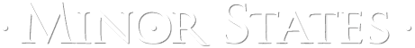
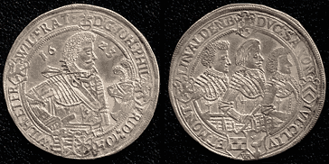

(The Germany History Network)


Saxe-Altenburg Talar, 1623, (D-7371) : Private Collection
Altenburg
Altenburg, is located in very eastern Thüringia on the river Pleiße. It was first mentioned in documents dated from 976 A.D. From 1328 on it was in possession of the House of Wettin (Sachen). The rights of a free town were confirmed by Margrave Heinrich of Meißen, Landgrave of Thüringia, in 1256, and were renewed by Margrave Friedrich III of Meißen in 1356.
When Elector Friedrich II of Sachen died in 1464, his countries were jointly ruled by his sons, Ernst and Albrecht. In 1485 they divided the countries among themselves. Altenburg was among the countries received by Elector Ernst. After the War of Schmalkalden, Altenburg was in possession of the Albertine line of the family from 1547 until 1554 when it passed to the Ernestine branch of the family. The Duchy Saxe-Altenburg was founded in 1603.
Saxe-Altenburg, 1603-1680
On the death of Friedrich Wilhelm I of Old Weimar and Old Altenburg in 1602, the Duchy was ruled by his four sons 1602-1625, by the three remaining 1625-1632, by the two remaining 1632-1639, and finally by the youngest alone Friedrich Wilhelm II 1632-1669.
The majority of the population of Altenburg was killed during the Thirty Years War (1618–1648).
The Ernestine line became extinct in 1672 with the death of Duke Friedrich Wilhelm III of Saxe-Altenburg, and Altenburg, Coburg, and Saalfeld passed to the New Gotha line. Three quarters of the country became part of the Duchy Saxe-Gotha, the rest became part of the Duchy Saxe-Weimar.
Gotha-Altenburg, 1680-1825
Frederick I (1680-1691), Frederick II (1691-1732), Frederick III (1732-1772), Ernest II (1772-1804), Augustus Ernest Leopold (1804-1822), Frederick IV (1822-1825).
In 1680 Altenburg and Gotha were combined into a Duchy for Ernst the Piou’s oldest son Friedrich I. When Saxe-Gotha-Altenburg line became extinct in 1825, there was another great adjustment of territories and titles among the Thüringian Saxon Duchies. The district of Gotha was granted to Saxe-Coburg and Altenburg itself was given to the Dukes of Saxe-Hildburghausen. The state was called Saxe-Altenburg therafter.
Saxe-Altenburg, 1825-1918
Frederick (V) (1825-1834), Joseph (1834-1848), George (1848-1853) Ernest I (1853-1908), Ernest II (1908-1918).
In 1826, the Duchies were rearranged by the arbitration of King Friedrich August I of Sachen. The new Duchies were Saxe-Meiningen, Saxe-Coburg-and-Gotha Saxe-Altenburg which was awarded to Duke Friedrich of Saxe-Hildburghausen. Saxe-Altenburg joined the German Customs Union in 1833-34, the North German Federation in 1867, and the German Empire in 1871.
Ernst II, the last Duke, abdicated in 1918. Saxe-Altenburg joined the newly-founded state of Thüringia in 1920.